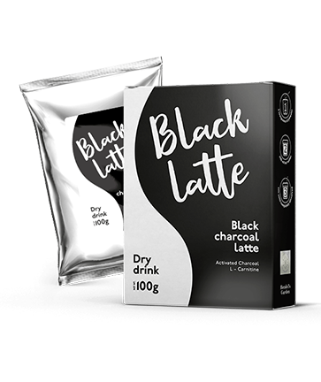
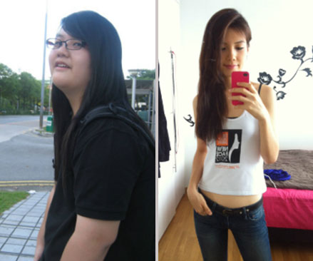
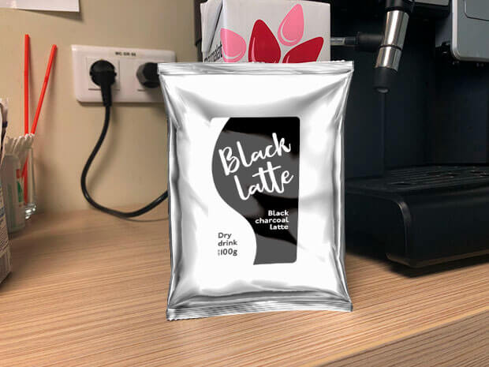
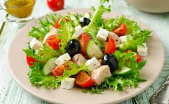
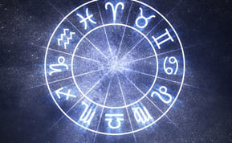

Black Latte diet tanpa sekatan. Mungkin ke?
Fesyen
5 KOMEN
KONGSI
5
Trend popular atau teknik yang berkesan? Apakah itu diet Black Latte sebenarnya?
Editor tanpa rasa takut kami Natalie Lu memeriksa semua aspek kaedah penurunan berat badan ini dan mengenalpasti kebaikan dan keburukan, dan juga mengetahui cara menjadikan diet Black Latte lebih berkesan.
Sasaran: hilang berat tambahan dalam 2 bulan
Keputusan: tolak 37 lbs tanpa edema dan stretchmark
Saya memutuskan membunuh dua burung dengan satu batu - hilangkan berat badan sebelum musim panas dan menulis artikel yang luar biasa. Jadi, apa itu diet Black Latte sebenarnya?
Ia diet rendah karbohidrat yang terdiri daripada lemak dan kuantiti protein yang sederhana. Secara mudah, anda tidak boleh makan makanan lazat yang paling kegemaran anda! Tiada gula, pastri, atau kentang. Makanan segera menjadi musuh # 1 anda. Walau bagaimanapun, kamu boleh makan banyak daging, yang anda mula membenci pada hari ketiga diet anda.
Karbohidrat ialah tenaga untuk badan kita. Apabila badan anda kekurangannya, ia akan mula membakar lemaknya sendiri untuk mendapatkan tenaga. Ini dipanggil Black Lattesis. Tisu protein mengekalkan otot anda dengan anda. Apa pengalaman saya sendiri?
Saya henti makan gula dan roti.
Diet saya termasuk daging, keju, keju cottage, sayur-sayuran, dan telur. Nampaknya bagus tapi saya mula mengalami tahap karbohidrat yang rendah dalam hanya 3 hari.
Bangun waktu pagi sukar. Saya tiada tenaga sama sekali. Malah otak saya bekerja lebih perlahan berbanding sebelum ini.
Saya telah turun 9 lbs dalam seminggu, yang merupakan hasil yang baik. Tetapi saya mula mengalami masalah dengan buah pinggang saya. Mereka tidak dapat memproses sejumlah besar protein yang saya makan bukan karbohidrat. Saya takut dan memutuskan untuk berhenti.
Saya jangka akan mendapat penerbitan saya pada bulan berikutnya dan saya gagal dalam percubaan saya. Untuk mengatasi keadaan, saya menyeru kepada kawan saya yang ahli diet. Dia bagitau saya mengenai produk yang boleh membantu menghindari mengeluarkan karbohidrat daripada diet saya.
Black Latte ialah tablet effervescent berdasarkan asid aminobutyric dan L-glutamin.
Komponen ini membantu organ dalaman kamu untuk menyesuaikan diri dengan diet baru anda dan meningkatkan fungsi otak anda semasa Black Lattesis. Vitamin dan mineral dapat meningkatkan stamina dan mengurangkan keletihan. Tetapi yang paling penting ialah mengambil Black Latte membolehkan anda makan karbohidrat. Makan makanan yang anda suka dan kurangkan berat badan! Secara sederhana, tentu saja.

Saya pasti bahawa percubaan saya berjaya. Saya telah turun berat badan dan menyegarkan almari pakaian saya. Sekarang saya pakai pakaian dan mini-skirt yang memakai pakaian badan, kerana bentuk baru saya membolehkan saya berbuat demikian. Dan saya akan menjadi lebih langsing sebelum musim panas.
Bagi mereka yang cuba menurunkan berat badan menggunakan diet Black Latte atau hanya merancang untuk melakukannya, saya amat mengesyorkan membeli Black Latte . Kesannya lebih ketara dan badan anda lebih sihat. Walau bagaimanapun, ia tidak sepatutnya berlebihan kerana badan mungkin mula bekerja untuk membakar lemak, akhirnya menyebabkan anoreksia. Nasib baik dan berharap anda semua mendapat badan langsing!
Komen:
May
Saya mengekalkan diet Black Latte hanya selama dua hari. Ia susah untuk hidup tanpa karbohidrat. Dan buat senaman sama sekali tidak dipersoalkan. Diet ini bukan untuk saya.
jawapannya
Bee
Black Latte hebat. Ia membantu saya turun 24 paun dalam 2 minggu! Saya tidak menafikan apa-apa. Hanya makan kuali yang kurang. Berat badan saya masih tidak berubah.

jawapannya
Dina
Saya tau tentang diet ini tetapi tidak pernah mencubanya. Saya tahu ramai bintang Hollywood menggunakannya untuk mengurangkan berat badan. Kardashian dan beberapa orang lain. Mereka mungkin telah digunakan Black Latte juga.
jawapannya
Lulu
sudah biasa Black Latte untuk hilangkan berat badan selepas bersalin. Mula-mula, saya hanya mencuba diet Black Latte tetapi tidak berfungsi untuk saya. Saya amat letih dan tidak dapat menjaga bayi saya dengan betul. Apabila saya cuba Black Latte Saya menjadi lebih bertenaga. Saya pasti akan berhenti makan gula. Saya kehilangan 30 lbs jadi jangan teragak-agak untuk mencuba.

jawapannya
POS TERKINI

10 diet yang paling berkesan untuk penurunan berat badan yang cepat
Untuk buat anda cemburu: 6 hari dari kehidupan seorang editor majalah berkilat (dan pembantu peribadinya)

Horoskop wanita yang berjaya dari 28 Januari hingga 3 Februari
Cerita berat badan saya. Selamat dan sangat berkesan
TAG POPULAR
nasihat
idea
inspirasi
moden
motivasi
tips & triks
tutorial
berjalan kaki
Black Latte @copyright 2019